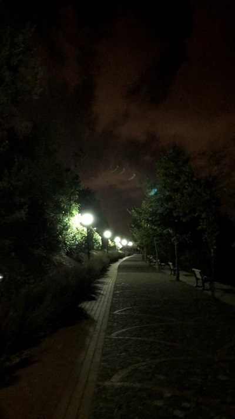
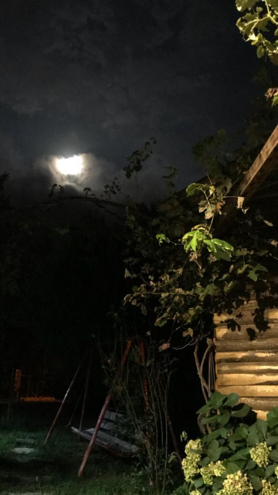
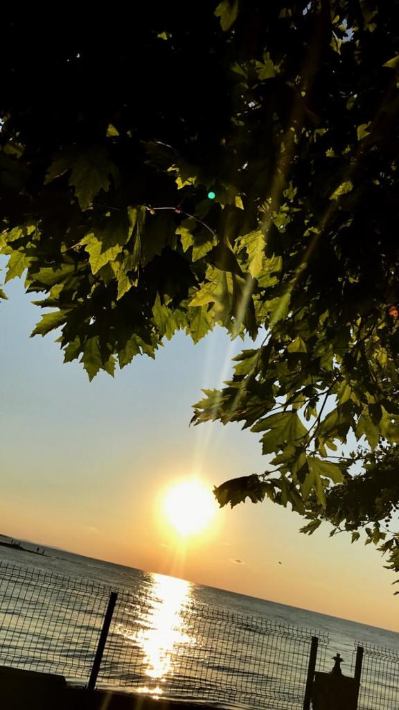

Ben Kimim?
Merhaba, ben Tuğçe. Burası benim kişisel bloğum aynı zamanda Web Teknolojileri dersi ödevim.
Bu sayfada sizlerle sevdiğim şeyleri, ilgimi çeken konuları, sevdiğim yerleri paylaşmaya çalışacağım.Ben, Sakarya Üniversitesi Bilgisayar Mühendisliği 4. sınıf öğrencisiyim. Öğrenci olarak yaptığım son ödevlerden biri.
Okul hayatım dışında sevdiğim insanlarla vakit geçirmeyi, dekorasyon fikirlerini, kitap okumayı, müzik dinlemeyi, etamin ve örgü tarzı el işleri yapmayı, temizlik yapmayı severim hatta sonuncuyu gereğinden fazla severim.
Aynı zamanda gökyüzünü fotoğraflamayı çok seviyorum. Bunu kendi çapımda amatör olarak yapıyorum.
Sakarya'da doğdum, büyüdüm. Ama babam Ordu'lu. Şubat ayında yapılan bir Yazılım Etkinliği kapsamında 12 saatlik yolculuğun ardından Ordu'yu ilk kez görmüş oldum ve çok beğendim. Hem Ordu hem de Sakarya'dan bahsettiğim bilgileri Şehirler kısmında bulabilirsiniz.
Genel olarak hayvanları çok severim ama onların sevgisi bana zarar verir. Çünkü fazla bağlanmak ve sonrasında mahvolmak gibi huylara maalesef sahibim. Daha önce 1 muhabbet kuşum, 2 balığım, 2 kaplumbağam oldu. Geçen sene 8 senelik muhabbet kuşumu kaybettikten sonra uzun bir süre hayvanlara yaklaşmasam da komşumuzun ve aynı zamanda bizim köpeğimiz Üzüm hayatıma girince dengeler değişti. Sayfamın bir yerinde mutlaka onlardan da bahsedeceğim.
Bana ait fotoğraflar

Gölpark-Sapanca

Kayalar Mahallesi

Yenimahalle-Karasu
Bana ait etaminler

İlk kelebeğim

Çiçek işlemem